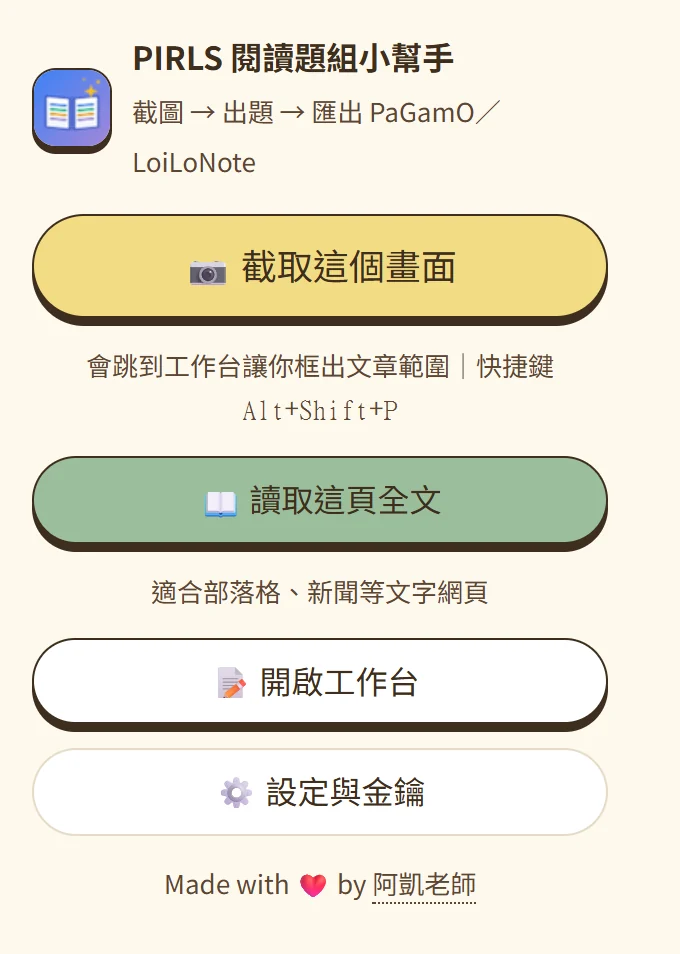
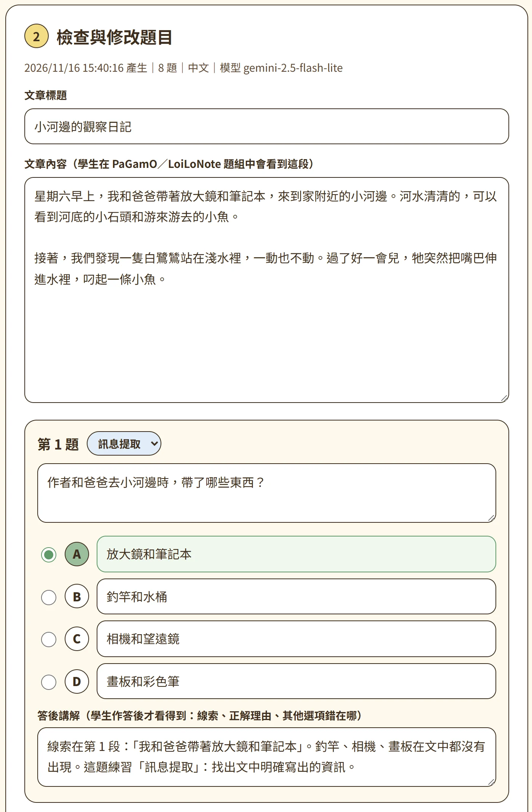

PaGamO 神隊友社群｜2026.12.11（五）20:00
好文章一鍵變題組
用 AI 小幫手把閱讀素養題送進 PaGamO
分享者
我是阿凱老師
🏫 桃園市龍潭區石門國民小學
資訊組長。學校是「鱻魚特色學園」，每天在第一線用 AI 備課、做教具、處理行政。🎮 PaGamO Level 3 領航家
跟著神隊友社群，朝 Level 4 講師資格前進。🛠️ 為什麼做這個工具
好文章到處都是，要變成 PIRLS 題組放進 PaGamO 卻很花時間，所以自己動手做了一個小幫手。
阿凱老師的教育工具
cagoooo.github.io/Akai
老師的日常
好文章到處都有，題組很難出
文字要重打
電子書、PDF、學習單常常不能複製，只好一個字一個字打。
四個層次難兼顧
找答案的題目好出；要推論、統整、評論的題目最花腦力。
上傳格式麻煩
批量上傳範本欄位固定，文章、題目、選項、答案要一格一格貼。
快速複習
PIRLS 四個理解層次
訊息提取
找出文中明確寫出的資訊
直接推論
把前後文連起來，推出沒有直接寫的事
詮釋整合
統整全文，理解主旨、人物感受
評估批判
評論內容、寫法與作者觀點
小幫手出題的配比：8 題：每層 2 題 10 題：3／3／2／2
解法登場
反白、YouTube
四層次出題
修改把關
PaGamO 題組
PIRLS 閱讀題組小幫手
Chrome 擴充功能・免費・老師用自己的 Gemini 金鑰
📷
素材截圖、讀全文、反白、YouTube
›
✨
出題Gemini 依 PIRLS四層次出題
›
✏️
檢查老師逐題修改把關
›
🚀
送出一鍵送到PaGamO 題組
第 1 步｜素材
四種方法，把文章交給小幫手

📷 截取畫面
電子書、PDF、學習單都行，題組會附上原始截圖。📖 讀取這頁全文
新聞、部落格最好用，自動去掉廣告與留言。🖍️ 反白文字
反白一段，按右鍵「用這段文字出題」。🎬 YouTube 影片
按「用這部影片出題」，可只選一段；講解標出幾分幾秒。🎓 出題前可選一～六年級：AI 先把文章改寫成該年級讀得懂的版本，再依程度出題。
現場示範 DEMO
從一篇文章到 PaGamO 題目總覽
- 打開一篇新聞文章（事先準備好）
- 按工具列圖示 →「讀取這頁全文」
- 選 8 題、中文 → 開始出題
- 逐題看一遍，示範改一題
- 按「送到 PaGamO（題組版）」
- 倒數 5 秒自動「上傳」→ 自動跳到題目總覽
示範倒數
12:00
📺 在 Meet 只分享 Chrome 分頁；示範用公開文章，畫面上不出現學生資料。
第 2 步｜檢查
AI 出題，老師把關

✅ 送出前看這五件事
① 題幹看得懂，只有一個正解
② 正解在文章裡找得到線索
③ 選項長度差不多，沒有一眼就猜得到的
④ 答後講解寫出線索、其他選項錯在哪
⑤ PIRLS 層次標對了（下拉選單可以改）
改完自動儲存，關掉分頁也不會不見。
第 3 步｜送出

一鍵送到 PaGamO
1先下載一份備份到電腦
2自動打開 PaGamO 批量上傳頁
3自動選好「題組」、放好檔案
4倒數 5 秒自動「上傳」，
跳到題目總覽標出新題組
跳到題目總覽標出新題組
選項順序預設隨機；還沒登入 PaGamO 就先登入，登入後會自動回到上傳頁。
前後對比｜拖拉下方滑桿
以前現在
同一篇文章，出題流程的轉變
📝 以前：全部自己來
- 找文章，不能複製就自己打字
- 自己想 8 題，還要兼顧四個層次
- 下載批量上傳範本，一格一格貼上文章、題目、選項、答案
- 選題型、上傳，格式錯了再重來
✨ 現在：老師當總編輯
- 在文章頁按一下，讀取全文或截圖
- AI 依四個層次起草 8 題，附答後講解
- 老師逐題檢查、修改，把關品質
- 一鍵送到 PaGamO，自動上傳、標出新題組
延伸

不只 PaGamO
🃏 LoiLoNote 測驗卡
・題組檔：只有題目，文章另外發給學生
・含文章版：文章放在題目前面，讀完再作答
🌐 網站版：PIRLS 閱讀理解生成站
・Wayground、Kahoot 試算表
・Wordwall 貼題準備表
・教師 PDF（含解答）、學生閱讀素材 PDF
今晚就能用
按「加到 Chrome」
把小幫手釘到工具列
按「儲存並測試」
金鑰只存在老師自己的電腦，不會送到其他地方。
三步驟裝起來
🛒
① 商店安裝Chrome 線上應用程式商店按「加到 Chrome」
›
🧩
② 釘選按右上角拼圖圖示，把小幫手釘到工具列
›
🔑
③ 設定金鑰貼上 Gemini 金鑰按「儲存並測試」
⚠️ 申請金鑰請用個人 Gmail
到 Google AI Studio 申請免費金鑰時，不要用學校信箱，用個人帳號申請才能使用免費額度。金鑰只存在老師自己的電腦，不會送到其他地方。
商店安裝
圖文說明
基本操作教學
Q&A
謝謝大家，歡迎提問！
商店安裝
圖文說明
基本操作教學
互動與回饋
會後到縣市 LINE 社群分享時，互動頁有一段可以一鍵複製的分享文字。